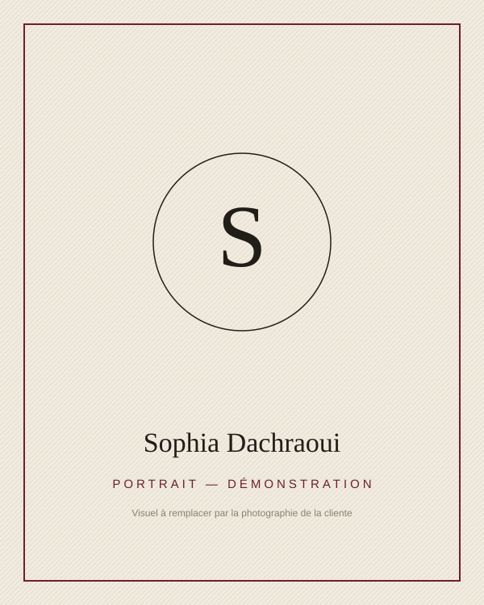

La lecture comme hospitalité
Revue fictive de démonstration — Cahiers de littérature comparée (à confirmer)
Écriture · Littérature · Recherche · Transmission
Un espace dédié à la littérature, à la recherche et à la transmission — où l’écriture se pense comme une manière d’habiter le monde et de le partager.
Démonstration — les contenus de ce site sont fictifs et remplaçables.
« Un site est une maison : chaque page une pièce, chaque texte une fenêtre. »
Note d’intention — démonstration

Entre écriture et recherche, un même mouvement : lire le monde, et le rendre lisible.
Ce site rassemble un travail mené entre écriture et recherche : des essais, des publications, des cours et des projets éditoriaux collectifs. Chaque texte de cette démonstration est un contenu fictif, destiné à être remplacé par les contenus réels de l’auteure.
Essais, récits et textes littéraires — le travail de la langue comme matière première.
Un questionnement mené dans la durée, entre littérature, histoire des idées et pratiques de lecture.
Cours, ateliers et conférences : faire circuler les textes et les outils pour les lire.
Direction d’ouvrages collectifs et accompagnement de projets d’écriture.
Un itinéraire entre les textes, les salles de classe et les bibliothèques.
Trame fictive — les étapes réelles seront validées par la cliente.
Années de formation
Étape de démonstration — parcours de formation à compléter (études, institutions, mémoires).
Premières publications
Étape de démonstration — premiers textes publiés, revues, rencontres éditoriales.
Recherche
Étape de démonstration — axes de recherche, séminaires, collaborations.
Transmission
Étape de démonstration — enseignements, ateliers d’écriture, interventions publiques.
Aujourd’hui — 2026
Étape de démonstration — ouvrage en préparation, ouvrages collectifs, nouvelles publications.
Trois chantiers, une même question : que font les textes à ceux qui les lisent ?
Comment la fiction accueille-t-elle ce que l’histoire ne peut pas dire ?
Que fait lire au texte — et que fait le texte à celui qui lit ?
Qu’advient-il d’une phrase lorsqu’elle passe d’une langue à l’autre ?
Essai — ouvrage principal · 2026 · En préparation
Essai sur la lecture comme demeure
Ce livre — dont la présentation est ici fictive — propose de penser la lecture comme une forme d’habitation. On n’y traverse pas les textes comme des couloirs : on s’y installe, on y revient, on y laisse des traces.
Chaque chapitre explore une pièce de cette maison : le seuil (commencer), la fenêtre (le point de vue), la marge (habiter le bord), la bibliothèque (les pièces communes).
« Habiter un texte, c’est accepter qu’il nous démeuble un peu. »
Extrait fictif — démonstration
Revue fictive de démonstration — Cahiers de littérature comparée (à confirmer)
Revue fictive de démonstration — Études de lettres (à confirmer)
Actes de colloque fictifs — Rencontres de la traduction littéraire (à confirmer)
Références fictives — aucune publication réelle n’est mentionnée.
Ce que l’attention fragmentée fait à la lecture — et ce que la lecture peut encore pour elle.
Lire l’articleCe que nos étagères racontent de nous — et ce qu’elles taisent.
Lire l’articlePetite apologie des écritures préparatoires.
Lire l’articleSur l’enseignement de la littérature.
Lire l’articleLa traduction de soi comme expérience littéraire.
Lire l’articleAnnoter, c’est habiter le livre.
Lire l’articleUn cycle d’ateliers pour apprendre à tenir un carnet, trouver sa voix et passer du fragment au texte.
Un parcours de lecture pour revenir aux grands textes sans la distance scolaire — et les lire comme des contemporains.
Un séminaire de recherche ouvert sur les formes narratives de la mémoire — lecture, discussion, écriture.
Écrire ensemble : des appels à contributions ouverts aux chercheur·ses et aux écrivain·es.
Où lit-on aujourd’hui — et que font ces lieux à la lecture ?
Proposer une contributionMémoire, récit et passage entre les langues.
Proposer une contributionUne lettre sobre : les nouveaux textes, les appels en cours, rien d’autre.